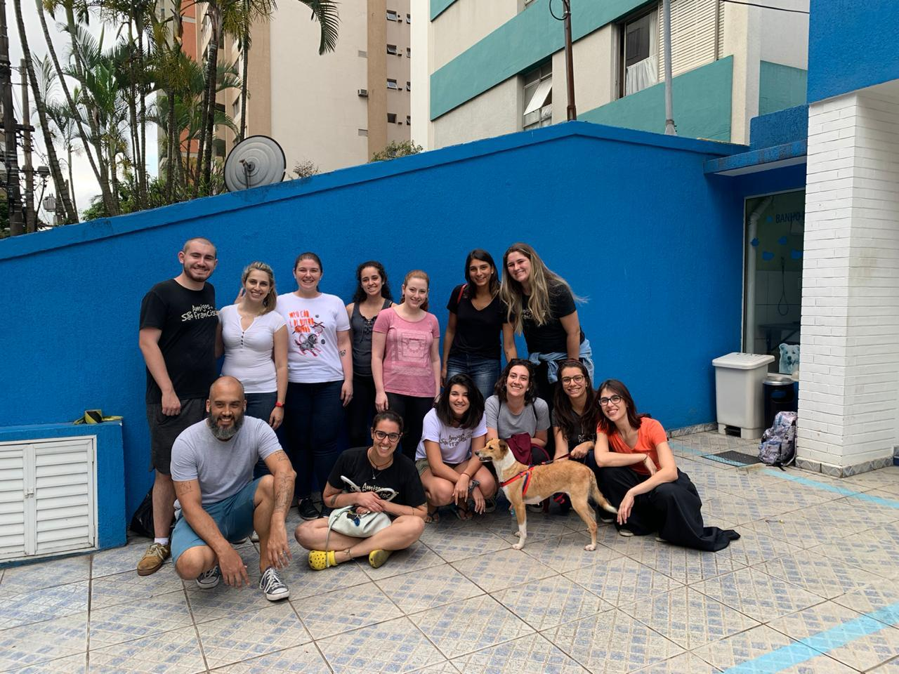
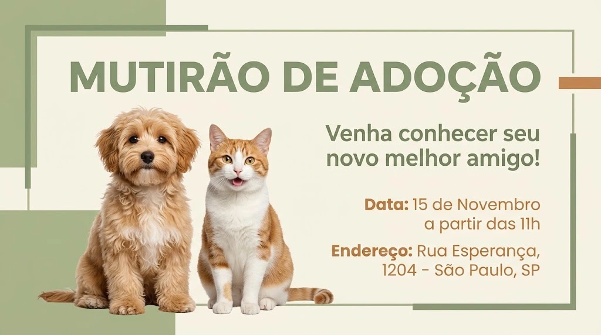

O Instituto Patas Que Transformam nasceu da vontade de quatro amigos que se
encontravam para ajudar animais abandonados nas ruas do bairro.
O que começou com a entrega de ração, água, e com pequenos resgates feitos
com recursos do próprio bolso, cresceu e se transformou em uma organização
que cuida de resgate, tratamento, castração, vacinação e adoção responsável.
Desde a nossa fundação, já ajudamos mais de 1.200 animais
por meio de diferentes projetos:
Mais de 450 cães e gatos resgatados e encaminhados para adoção;
Mais de 500 animais castrados em campanhas gratuitas;
Mais de 250 animais vacinados e vermifugados em mutirões;
Dezenas de animais com tratamento veterinário completo após resgates.
Quem criou o projeto e Nossa Equipe
O Instituto foi criado por quatro pessoas apaixonadas pela causa animal:
Maria Fernanda
Lucas
Roger
Gasparelli
Contamos com uma equipe de mais de 10 pessoas, todas juntas buscando o mesmo propósito.

Missão, Visão e Valores
Missão
Resgatar, cuidar e encontrar um lar responsável para animais em situação de
abandono ou maus-tratos, além de promover a conscientização sobre a posse
responsável e o respeito a todas as formas de vida.
Visão
Ser reconhecida como uma organização de referência na proteção animal,
construindo uma sociedade em que nenhum animal viva nas ruas e todos
tenham uma vida digna e cheia de carinho.
Valores
Amor e respeito aos animais;
Transparência no uso dos recursos;
Responsabilidade e compromisso com cada resgate;
Ética e honestidade em todas as nossas ações;
Empatia com animais e com pessoas;
Trabalho em equipe e voluntariado.
Notícias
Mutirão de adoção de cães e gatos

Data: 15 de novembro de 2026
Venha conhecer seu novo melhor amigo! Teremos um grande mutirão de adoção
com vários cães e gatos, todos vacinados, vermifugados e castrados,
esperando por uma família. A adoção é gratuita e feita com
acompanhamento da nossa equipe.
Dia de vacinação gratuita
Data: 29 de novembro de 2026
Traga seu cão ou gato para receber a vacina antirrábica gratuitamente.
Haverá também aplicação de vermífugo e orientações de cuidados
com a saúde do seu pet. Leve a carteirinha de vacinação, se tiver.
Campanha de castração solidária
Data: 13 de dezembro de 2026
Estão abertas as inscrições para a campanha de castração solidária.
A castração é uma das formas mais eficientes de reduzir o abandono e
garantir mais saúde e qualidade de vida aos animais. As vagas são
limitadas, então inscreva-se!
Faça sua doação
Cada contribuição, de qualquer valor, ajuda a transformar a vida de um
animal. Escolha uma campanha e faça parte dessa história!
Campanha: Casa de Recuperação para Animais Resgatados
Estamos construindo um espaço adequado para receber, tratar e abrigar os
animais resgatados até que eles encontrem um novo lar. Os recursos serão
usados na compra de baias, medicamentos, ração e materiais de limpeza.
Meta da campanha: R$ 10.000,00
Já arrecadado: R$ 6.500,00
Ainda falta: R$ 3.500,00
Escolha o valor da sua doação
Seja um voluntário
Você pode ajudar de muitas formas: passeando com os cães, ajudando nos
mutirões de adoção, cuidando da divulgação nas redes sociais, transportando
animais ou apoiando nos eventos. Todo mundo tem algo a oferecer!
Para mais informações entre em contato
E-mail: contato@patasquetransformam.org.br
Telefone: (11) 99999-9999
Transparência
No Instituto Patas Que Transformam, buscamos ser 100% verdadeiros e
transparentes com todas as pessoas que doam. Por isso, disponibilizamos
um Relatório de Transparência, com informações sobre o valor arrecadado,
como cada doação foi utilizada e os resultados alcançados. Preencha os
dados abaixo para solicitar o seu relatório.